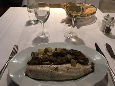
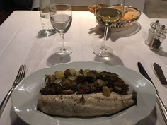
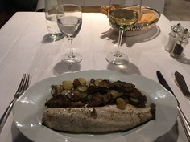

These are photos looking into my trip to Rome and the Vatican City. I had a blast and the city is absolutely gorgeous. This just gives a glimpse of what I saw since the pictures dont do some of it justice. Hope you enjoy.
All photos taken by Aaron Jackson
